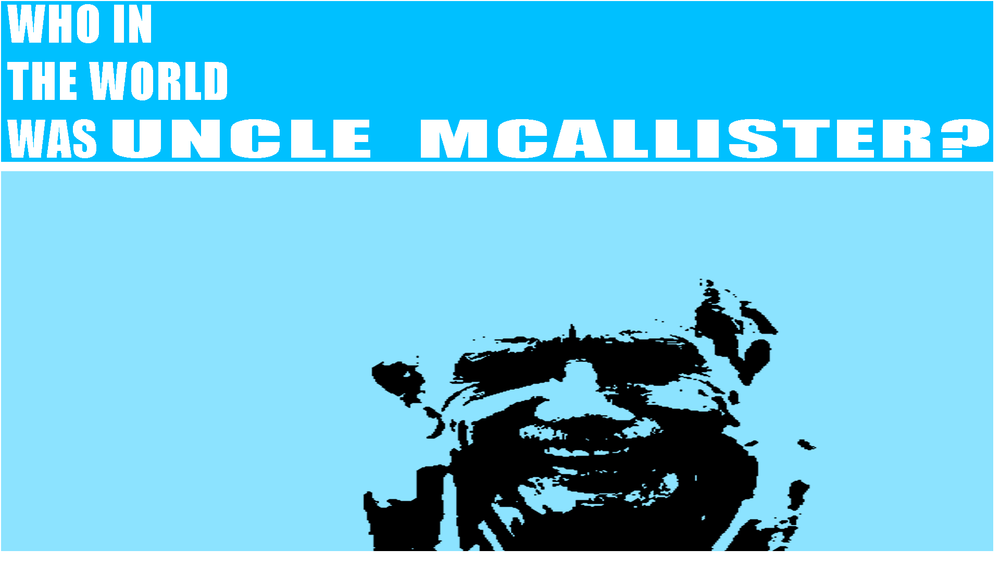

My name is William and I’m seven and three-quarters years old.
My favorite food is hot dogs with ketchup, and my favorite
person used to be Uncle McAllister. He was my dad’s brother,
but everyone called him “Uncle McAllister” Like, even grownups.
I don’t really remember his voice exactly, but I remember he laughed
with his whole belly, even when it wasn’t Christmas. He always smelled
like old books, and once he gave me a rock and said it was from the moon.
I believed him because he had a telescope and knew the names of all the stars,
even the ones I couldn’t see.
I think he was magic.
But now he’s gone.
Nobody really told me how it happened. When I asked my mom, she said, “It was just his time,”
like he had an appointment or something. Dad just said, “He was a complicated man,” which I didn’t
understand because he always made things simple for me.
Sometimes I wonder if he’s actually still alive, just hiding somewhere secret.
One day I’ll find out what really happened to him.
But maybe… maybe I don’t want to know just yet.
- William McAllister, 7